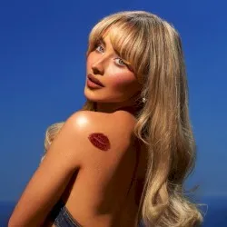
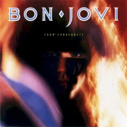
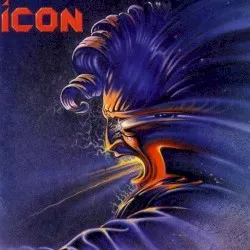

@besantanag95élQuilpue
Desde agosto de 2026
besantanag95
«Me gusta la musica ochentera»
 The Rise and Fall of a Midwest PrincessChappell Roan
Su himno
The Rise and Fall of a Midwest PrincessChappell Roan
Su himno
TasteSabrina Carpenter Su artista Chappell Roan
13reseñas escritas
15favoritos
2·3seguidores · siguiendo
Chappell Roan
13reseñas escritas
15favoritos
2·3seguidores · siguiendo
Ficha
- Soy
- Oyente · Coleccionista
- Géneros
- rockmetalhard rock
- Escucha en
- Vinilo · CD · Streaming · Archivos
- 1.er show
- Deep Purple
- 1.er disco
- Def Leppard — On Through the Night
Huella de gusto
Completa →2020s
Escucha sobre todo música de esta década. Su familia más presente es Rock, sobre todo glam metal.
Sigue a 10 artistas
Ver → Ratt
Ratt Belinda Carlisle
Belinda Carlisle Europe
Europe Queen
Queen Lana Del Rey
Lana Del ReyEmpieza por aquí
Elegido por besantanag95
Reseñas
Las 13 → Bad Animals★ 4,0
Bad Animals★ 4,0
Heart Christmas the Whole Year Round★ 1,0
Christmas the Whole Year Round★ 1,0
Sabrina Carpenter Stand Out★ 1,0
Stand Out★ 1,0
Sabrina Carpenter Can't Blame a Girl for Trying★ 4,0
Can't Blame a Girl for Trying★ 4,0
Sabrina Carpenter
Diario
Completo → Man's Best FriendRepetición
Man's Best FriendRepetición
Sabrina Carpenter · 24 sept
7800° FahrenheitPrimera escucha
Bon Jovi · 14 sept · «Discazo»
IconPrimera escucha
Icon · 14 sept- TearsRepetición
Sabrina Carpenter · 22 ago
Favoritos
Los 15 → RattRatt
RattRatt- Man's Best FriendSabrina Carpenter
 Dr. FeelgoodMötley Crüe
Dr. FeelgoodMötley Crüe- The Rise and Fall…Chappell Roan
 Did you know…Lana Del Rey
Did you know…Lana Del Rey9 canciones
Love Bites · Def Leppard
After Midnight · Chappell Roan
Read your Mind · Sabrina C.
Kickstart My Heart · Mötley Crüe
Listas y recorridos
Las 6 →


Colección física
1 copia →
Tooth and Nail
Dokken · 1984 · vinilo
Dokken · 1984 · vinilo